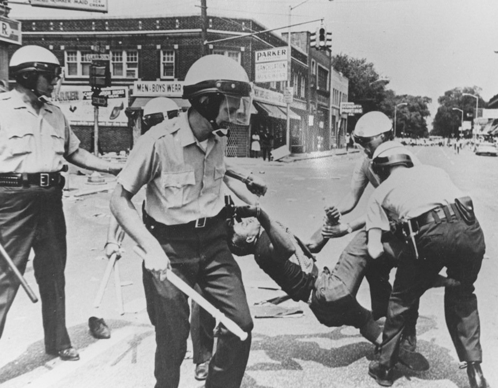
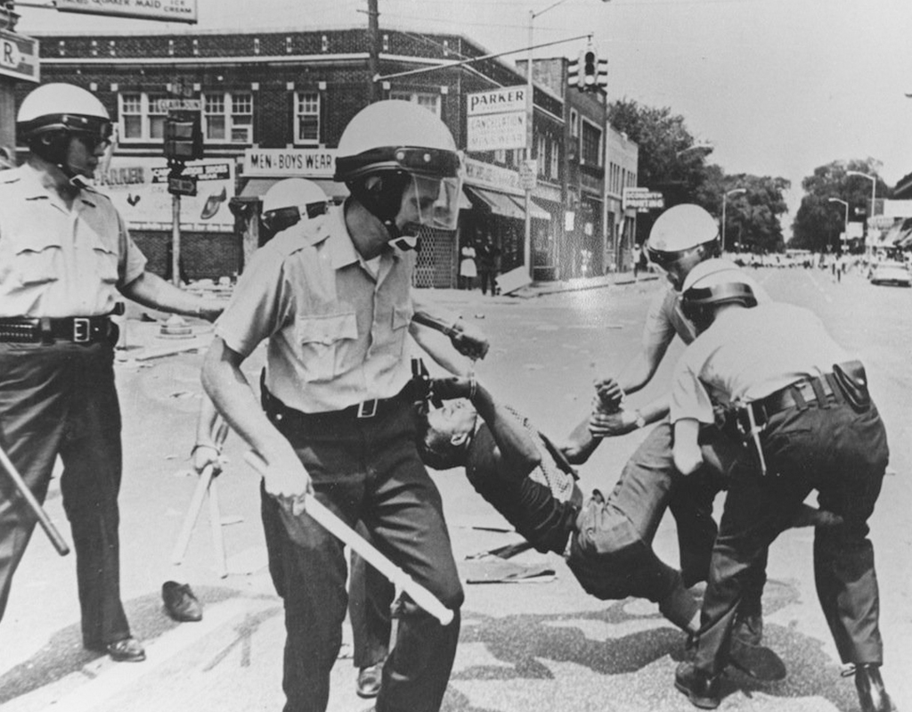

Police Brutality
1930 - 1960
Modern policing did not evolve into an organized institution until the 1830s and '40s when northern cities decided they needed better control over quickly growing populations. The first American police department was established in Boston in 1838. The communities most targeted by harsh tactics were recent European immigrants. But, as African-Americans fled the horrors of the Jim Crow south, they too became the victims of brutal and punitive policing in the northern cities where they sought refuge.
On June 21, 1940, a twenty-six-year-old black man named Jesse Thornton addressed a passing police officer by his name, Doris Rhodes. When the officer, a white man, overheard Mr. Thornton and ordered him to clarify his statement, he attempted to correct himself by referring to the officer as “Mr. Doris Rhodes.” The officer hurled a racial slur at Mr. Thornton while knocking him to the ground and arresting him. Mr. Rhodes then walked Mr. Thornton into the city jail as a mob of white men formed just outside. Mr. Thornton tried to escape and managed to flee a short distance while the mob quickly pursued, firing gunshots and throwing bricks, bats, and stones at him. Mr. Thornton was injured by gunfire and eventually collapsed. The mob dumped him into a truck and drove to an isolated street where he was dragged into a nearby swamp and shot again. Mr. Thornton’s decomposing, vulture-ravaged body was found a week later by a local fisherman in the Patsaliga River, near Tuskegee Institute.
Dr. Charles A.J. McPherson, a local leader in the Birmingham branch of the National Association for the Advancement of Colored People (NAACP), wrote a detailed report on Mr. Thornton’s lynching. Future United States Supreme Court Justice Thurgood Marshall, then an attorney with the NAACP, provided the Department of Justice with the report and requested a federal investigation. The Justice Department instructed the Federal Bureau of Investigation to determine whether law enforcement or other officials were complicit in the lynching but there is no record that anyone was ever prosecuted for Mr. Thornton’s murder.
Ku Klux Klan
Founded in 1866, the Ku Klux Klan (KKK) extended into almost every southern state by 1870 and became a vehicle for white southern resistance to the Republican Party’s Reconstruction-era policies aimed at establishing political and economic equality for blacks. Its members waged an underground campaign of intimidation and violence directed at white and black Republican leaders. Though Congress passed legislation designed to curb Klan terrorism, the organization saw its primary goal–the reestablishment of white supremacy–fulfilled through Democratic victories in state legislatures across the South in the 1870s. After a period of decline, white Protestant nativist groups revived the Klan in the early 20th century, burning crosses and staging rallies, parades and marches denouncing immigrants, Catholics, Jews, blacks and organized labor. The civil rights movement of the 1960s also saw a surge of Ku Klux Klan activity, including bombings of black schools and churches and violence against black and white activists in the South.
Though Democratic leaders would later attribute Ku Klux Klan violence to poorer southern whites, the organization’s membership crossed class lines, from small farmers and laborers to planters, lawyers, merchants, physicians and ministers. In the regions where most Klan activity took place, local law enforcement officials either belonged to the Klan or declined to take action against it, and even those who arrested accused Klansmen found it difficult to find witnesses willing to testify against them. Other leading white citizens in the South declined to speak out against the group’s actions, giving them tacit approval. After 1870, Republican state governments in the South turned to Congress for help, resulting in the passage of three Enforcement Acts, the strongest of which was the Ku Klux Klan Act of 1871.
From 1867 onward, African-American participation in public life in the South became one of the most radical aspects of Reconstruction, as blacks won election to southern state governments and even to the U.S. Congress. For its part, the Ku Klux Klan dedicated itself to an underground campaign of violence against Republican leaders and voters (both black and white) in an effort to reverse the policies of Radical Reconstruction and restore white supremacy in the South. They were joined in this struggle by similar organizations such as the Knights of the White Camelia (launched in Louisiana in 1867) and the White Brotherhood. At least 10 percent of the black legislators elected during the 1867-1868 constitutional conventions became victims of violence during Reconstruction, including seven who were killed. White Republicans (derided as “carpetbaggers” and “scalawags”) and black institutions such as schools and churches—symbols of black autonomy—were also targets for Klan attacks.
The Great Migration
Interactions between African Americans and urban police departments were initially shaped by the Great Migration (1916–70) of African Americans from the rural South into urban areas of the North and West, especially following World War II. Most white communities, including white police departments, were unaccustomed to the presence of African Americans and reacted to their increasing numbers with fear and hostility, attitudes that were exacerbated by deeply ingrained racist stereotypes. Reflecting the beliefs of many whites, northern police departments acted upon the presumption that African Americans, and especially African American men, possessed an inherent tendency toward criminal behaviour, one that required constant surveillance of African Americans and restrictions on their movements (segregation) in the interests of white safety. Accordingly, by the mid-1950s many urban police departments had implicitly reconceived their missions as essentially that of policing African Americans—i.e., protecting whites against blacks.
The forms of police brutality to which this situation gave rise were variable and generally not limited to physical assault (e.g., beatings) and excessive use of force. They also included unlawful arrests, verbal abuse (e.g., racial slurs) and threats, sexual assaults against African American women, and police homicides (murders of civilians by police). Police were also sometimes complicit in drug dealing, prostitution, burglaries, protection schemes, and gun-smuggling within African American neighbourhoods. Although police brutality against African Americans had become a serious problem in many urban areas by the mid-20th century, most whites remained unaware of it until about the mid-1960s, in large part because most large-city newspapers (whose readerships were primarily white) did not consider it newsworthy. In contrast, incidences of police brutality were regularly covered in the black press from the early 20th century, frequently in front-page articles. Likewise, local and national civil rights organizations collected thousands of affidavits and letters from African Americans documenting their direct experiences of police brutality.